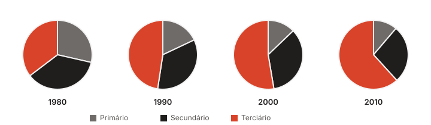
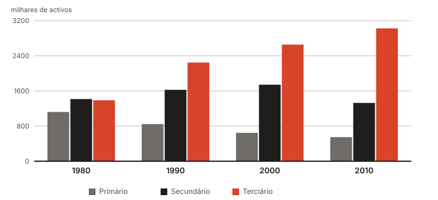
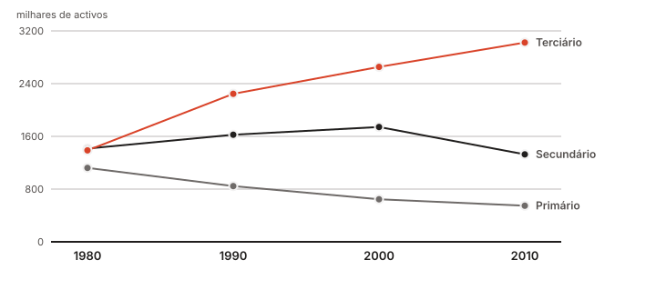

Este texto saiu em dezembro de 2016 no blogue antigo do novathesis. Dez anos depois continua a responder à pergunta que mais vezes me fazem sobre apresentação de resultados, por isso trago-o para aqui — com os gráficos redesenhados e, no fim, o que a experiência entretanto acrescentou.
A pergunta
Devo apresentar os meus dados na forma de gráfico ou de tabela?
A escolha depende do objetivo. Mas de que forma? Ao longo dos anos vi inúmeras vezes resultados apresentados em tabelas que deviam estar em gráficos. Raras vezes aconteceu o contrário.
Se o que se pretende mostrar é uma ordem de grandeza, uma variação, uma tendência, então a melhor escolha é um gráfico. Um bom gráfico omite os detalhes e ilustra com clareza a mensagem. Se, pelo contrário, os valores exatos são mesmo importantes, então a tabela é a solução.
Sugestão: tenta sempre apresentar os resultados em gráfico. Bem feitos, são normalmente mais fáceis de ler e de entender do que as tabelas.
Dez segundos com uma tabela
A tabela seguinte apresenta a distribuição da população ativa portuguesa por setor de atividade, em milhares de trabalhadores. Que informação consegues extrair dela em dez segundos?
| Ano | Primário | Secundário | Terciário |
|---|---|---|---|
| 1980 | 1121,0 | 1415,0 | 1388,0 |
| 1990 | 845,6 | 1624,6 | 2245,2 |
| 2000 | 645,2 | 1741,7 | 2654,4 |
| 2010 | 548,1 | 1327,3 | 3023,0 |
Provavelmente muito pouca.
A mesma informação em gráfico
{kind=link}

Agora já se lê alguma coisa:
- Em 1980 a distribuição estava equilibrada pelos três setores.
- Entre 1980 e 2010 o peso dos setores primário e secundário diminuiu a favor do terciário.
Mas outras perguntas continuam difíceis, ou mesmo impossíveis:
- A distribuição em 1980 não era seguramente de um terço para cada. Qual dos setores tinha mais trabalhadores, e qual tinha menos?
- O terciário cresceu — mas em 2010 representa o dobro de 1980?
- E em 1990, o secundário era o dobro do primário?
- Em termos absolutos, havia mais ou menos gente no secundário em 1980 ou em 2010?
A escolha do tipo de gráfico é que faz a diferença
{kind=link}

Voltemos às perguntas:
- Qual tinha mais e qual tinha menos em 1980? Do menor para o maior: primário, terciário, secundário.
- O terciário duplicou? Pouco mais do que isso: em 1980 está visivelmente abaixo dos 1500 e em 2010 está nos 3000.
- O secundário era o dobro do primário em 1990? Quase: pouco mais de 1600 contra pouco mais de 800.
- Mais ou menos gente no secundário, 1980 ou 2010? Claramente menos em 2010.
Resumo: não uses gráficos circulares. As barras e as linhas são quase sempre mais fáceis de ler e mais informativas.
Barras ou linhas?
{kind=link}

O gráfico de linhas responde exatamente às mesmas perguntas que o de barras, e torna as tendências mais fáceis de intuir. Mas só se deve usar quando o domínio da variável no eixo horizontal é contínuo — tempo, comprimento, área, volume. Quando esse domínio é discreto — cores, localidades, escolas — usa barras.
Dez anos depois
Quatro notas que acrescento hoje ao texto de 2016.
A terceira pergunta já tem resposta. Em 2016 escrevi que o gráfico de barras não conseguia dizer se o secundário era o dobro do primário em 1990. Conseguia — bastava ter linhas de grelha. O que o exemplo mostra afinal não é "barras melhor que circular", mas algo mais geral: um gráfico responde às perguntas para as quais tem escala. Sem eixo graduado, qualquer gráfico volta a ser uma impressão vaga.
O gráfico circular não é mau por moda. É mau porque nos obriga a comparar ângulos e áreas, e somos maus nisso. Comparar comprimentos alinhados na mesma base — barras — é a comparação em que somos melhores. É por isso que a recomendação não envelheceu.
A cor não pode ser o único código. Cerca de 8% dos homens têm alguma deficiência de visão cromática, e muitas teses ainda são impressas a preto e branco. Os gráficos aqui em cima distinguem as séries por luminosidade e não só por matiz, e cada série está identificada por legenda e por rótulo direto. Imprime o teu gráfico em tons de cinzento antes de o entregar: se deixar de se perceber, o problema não é da impressora.
Guarda os gráficos em vetorial. Um PDF ou SVG mantém-se nítido em qualquer ampliação e em qualquer impressão; um PNG ou JPEG fica pastoso para sempre. Estes gráficos são SVG — clica em qualquer um deles para veres o ficheiro original. Os de 2016 eram JPEG com 400 píxeis de largura, e é exatamente por isso que os redesenhei em vez de os copiar.